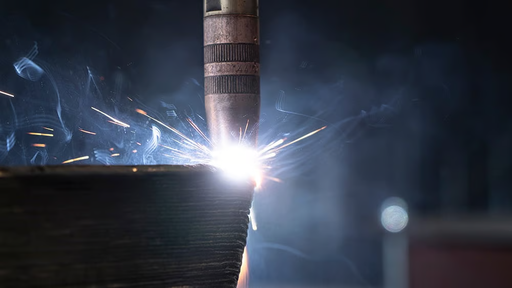

COMPANY PROFILE
SYNTEGRIS ENGINEERING & CONSULTING is a Malaysia-based engineering and consulting firm established in January 2026, focused on delivering reliable engineering solutions through authorized software distribution and specialized technical services.
We are an authorized reseller and implementation partner for advanced engineering software solutions, including SDC Verifier, DANTE, and STAMPACK. Through formal agreements with the respective software developers, we provide software supply, technical support, and engineering guidance to enable accurate structural verification, welding and heat treatment simulation, and forming analysis.
In addition to software distribution, we offer engineering consulting and PIT treatment services, supporting safety, performance, and regulatory compliance in demanding industrial environments.
ADVANCED EXPERTISE
What differentiates Syntegris is our strong expertise in welding engineering and advanced manufacturing technologies, including Wire Arc Additive Manufacturing (WAAM), metal 3D printing, and smart manufacturing systems.
As a research-based company linked to academic and industry experience, we bridge advanced digital tools with real-world industrial application.

Wire Arc Additive Manufacturing (WAAM) Process
VISION
To lead Malaysia’s transition toward Smart Engineering, where digital precision meets physical excellence.
MISSION
To provide a comprehensive ecosystem of authorized engineering software solutions and specialized mechanical treatments (PIT) that drive innovation, enhance safety, and support Malaysia’s Industry4WRD goals.
Our Leadership
Guided by engineers committed to engineering excellence.

Haikal Azhar
DirectorSpecializes in ANN/CNN integration for automated quality control. Expert in Smart Manufacturing systems, real-time defect detection, and PLM-driven process optimization.

Azri Rahimi
DirectorFocuses on Asset Integrity and Rotating Equipment. 10+ years in the Energy sector specializing in reliability engineering and technical auditing.

Abdul Rahman
DirectorSpecializes in Structural Integrity and Static Equipment. Expert in pressure vessel compliance, offshore asset maintenance, and FEA-driven assessments.